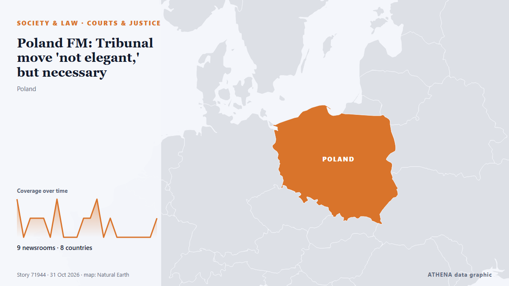

Poland FM: Tribunal move 'not elegant,' but necessary

Poland's Foreign Minister Radoslaw Sikorski stated on Saturday that last night's police deployment at the Polish Constitutional Tribunal in Warsaw was "not elegant," but still better than an… από AzerNews
Αναφέρθηκε ανεξάρτητα από 11 μέσα σε 9 χώρες από τις 30 Οκτ, πρώτο το Greek City Times· η κάλυψη εξασθενεί. Το ATHENA εκτιμά τον κίνδυνο αυξημένο (4.7/10), κυρίως λόγω της σοβαρότητάς του και της τεκμηρίωσης. Βεβαιότητα 90% (υψηλή): το επιβεβαιώνουν 11 ανεξάρτητα μέσα, μέση αξιοπιστία 76%. Μέσα ανά χώρα: Αζερμπαϊτζάν (4), Ελλάδα (2), Βέλγιο (1). Κάλυψη: 30 Οκτ έως 31 Οκτ, 21 ώρες.
Γιατί έχει σημασία: Οι νομικές αλλαγές και οι αλλαγές πολιτικής μεταβάλλουν δικαιώματα, υποχρεώσεις και δημόσιες υπηρεσίες για όσους αφορούν.
Τι άλλαξε: 13 νέες αναφορές από 11 μέσα στο 24ωρο έως 31 Οκτ.
Πρώτη διατύπωση: Tusk-Nawrocki battle escalates as chief judge is ousted from Poland’s top court
Οι τίτλοι των ειδήσεων παρουσιάζονται στα αγγλικά, όπως δημοσιεύτηκαν.
Με μια ματιά
Επιλέγεται, βαθμολογείται και γράφεται από τη δημοσιευμένη μεθοδολογία του ATHENA. Κανένας συντάκτης δεν παρεμβαίνει σε μεμονωμένα γεγονότα. Πώς παράγεται ›
| 30 Oct 20:37 UTC | 2 |
|---|---|
| 30 Oct 21:37 UTC | 0 |
| 30 Oct 22:37 UTC | 1 |
| 30 Oct 23:37 UTC | 1 |
| 31 Oct 00:37 UTC | 1 |
| 31 Oct 01:37 UTC | 0 |
| 31 Oct 02:37 UTC | 2 |
| 31 Oct 03:37 UTC | 0 |
| 31 Oct 04:37 UTC | 0 |
| 31 Oct 05:37 UTC | 0 |
| 31 Oct 06:37 UTC | 1 |
| 31 Oct 07:37 UTC | 1 |
| 31 Oct 08:37 UTC | 2 |
| 31 Oct 09:37 UTC | 0 |
| 31 Oct 10:37 UTC | 1 |
| 31 Oct 11:37 UTC | 0 |
| 31 Oct 12:37 UTC | 0 |
| 31 Oct 13:37 UTC | 0 |
| 31 Oct 14:37 UTC | 0 |
| 31 Oct 15:37 UTC | 0 |
| 31 Oct 16:37 UTC | 0 |
| 31 Oct 17:37 UTC | 1 |
| 30 Oct 22:26 UTC | 3.4 |
|---|---|
| 31 Oct 01:44 UTC | 1.9 |
| 31 Oct 01:53 UTC | 3.5 |
| 31 Oct 09:52 UTC | 4.5 |
| 31 Oct 17:45 UTC | 4.7 |
Γιατί αυτοί οι αριθμοί
Σημασία
Κίνδυνος
Βεβαιότητα
Η κάλυψη — ποιος το ανέφερε και πότε
ο τίτλος όπως δημοσιεύτηκε · ανοίγει το πρωτότυπο- Greek City Times · ΕλλάδαPoland Faces Constitutional Crisis as Tusk Government Moves Against Tribunal Leadership
- Politico Europe · ΒέλγιοTusk-Nawrocki battle escalates as chief judge is ousted from Poland’s top court
- Anadolu Agency (English) · ΤουρκίαUS envoy urges calm amid standoff at Poland's Constitutional Tribunal
- APA (English) · ΑζερμπαϊτζάνWhy has Poland's Constitutional Tribunal crisis brought protesters and police to Warsaw?
- Stuff · Νέα ΖηλανδίαPolice secure Poland’s Constitutional Tribunal as protests erupt over court chief’s suspension
- Haaretz (English) · ΙσραήλPolice secure Poland's top court after government suspends its chief
- Xinhua (English) — page reader · ΚίναProtests erupt outside Poland's Constitutional Tribunal amid leadership dispute
- APA (English) · ΑζερμπαϊτζάνThree detained over incident outside Constitutional Tribunal building in Poland
- APA (English) · ΑζερμπαϊτζάνMinister: Situation around Poland's Constitutional Tribunal has stabilized
- Greek Reporter · ΕλλάδαPoland in Major Crisis as Judges Oust Chief Justice
- France 24 English · ΓαλλίαProtesters gather at Poland's Top court
- Al Jazeera English · ΚατάρProtests outside Poland’s constitutional court: What’s the crisis about?
- AzerNews · ΑζερμπαϊτζάνPoland FM: Tribunal move 'not elegant,' but necessary